LADS ON TOUR
A group-built leveling compendium. Routes, dungeons, professions, preparation, and every little advantage worth knowing.
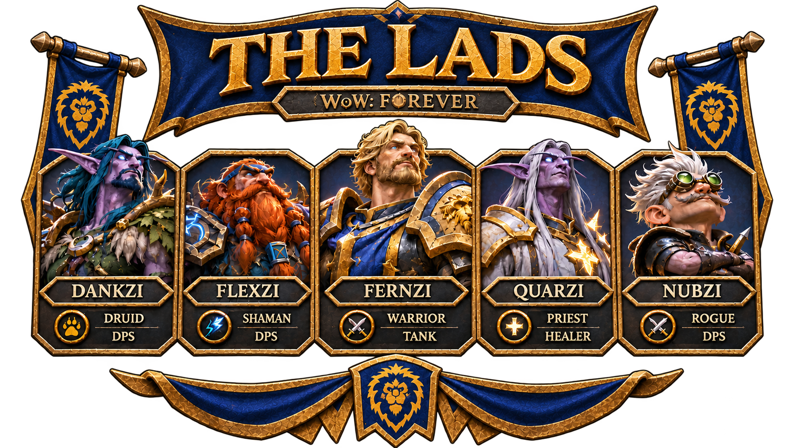
THE FIELD GUIDE
Everything the group needs, gathered in one place—from core leveling guides to special quests and group plans.
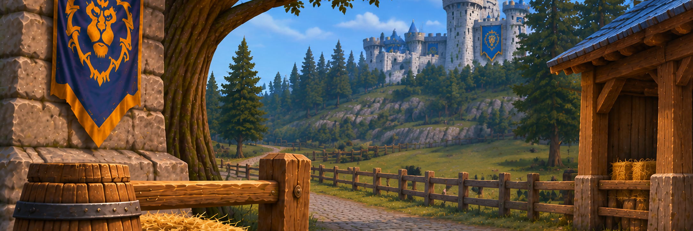
MOUNTS
Alliance racial mounts, vendor locations, prices, and saving for your first mount.
OPEN SECTION →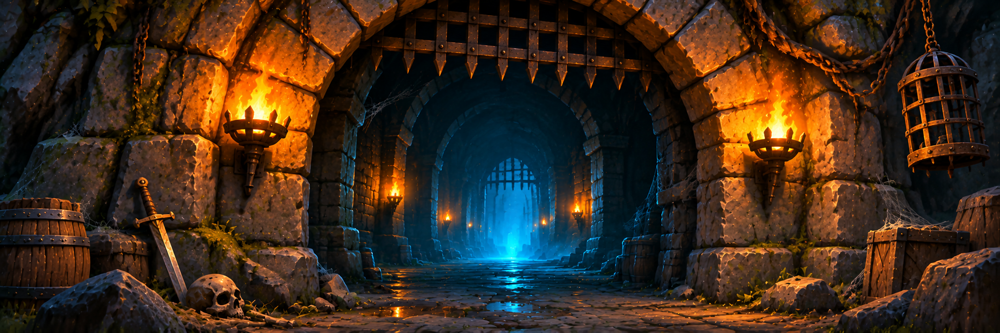
DUNGEONS
Dungeon progression, quest pickups, prerequisites, and useful run notes.
OPEN SECTION →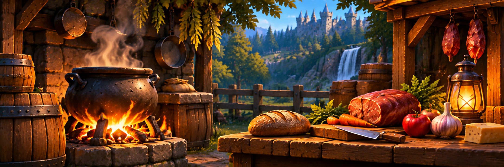
COOKING
Keep the reagents that matter. Prepare food buffs and maintain the XP bonus.
OPEN SECTION →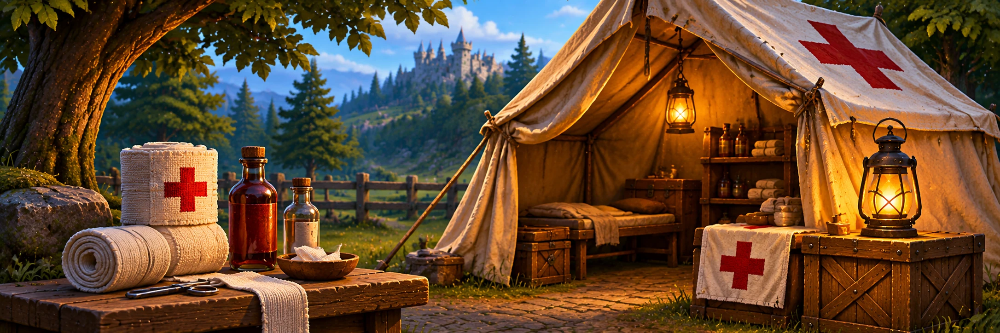
FIRST AID
Bandage milestones, cloth priorities, and useful consumable notes.
OPEN SECTION →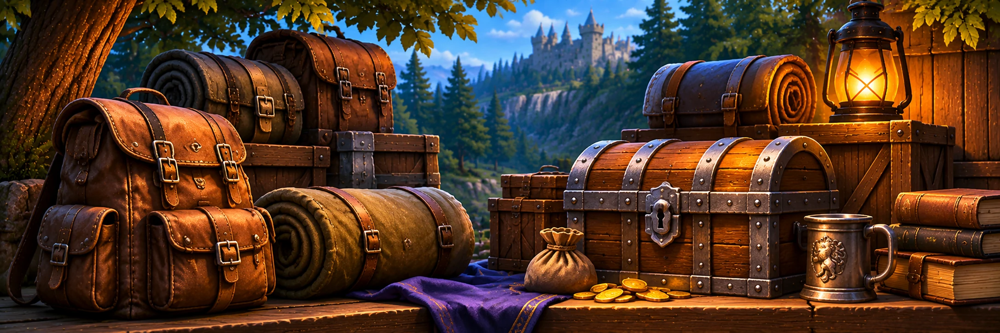
BAGS & INVENTORY
Bag upgrades, materials to save, and inventory planning.
OPEN SECTION →PRE-LEVELING
Launch-day preparation, early leveling tactics, and materials to save.
OPEN SECTION →ADDONS
A curated collection of useful tools for the journey.
OPEN SECTION →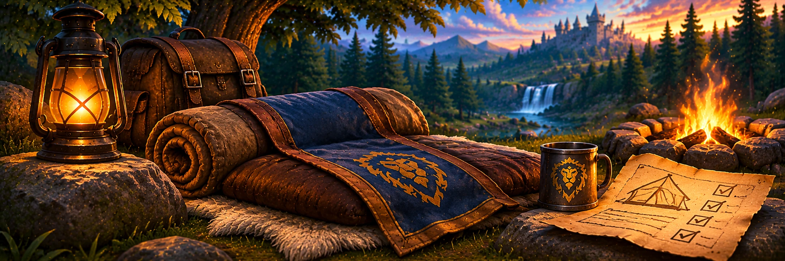
COZY SLEEPING BAG
Follow the complete questline and secure the experience bonus.
OPEN SECTION →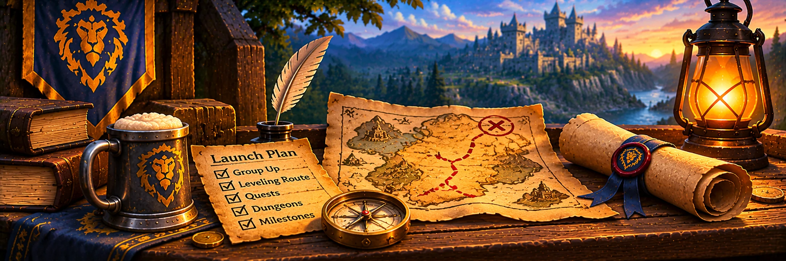
LAUNCH STRATEGY
Preparation, route planning, and the LADS launch schedule.
OPEN SECTION →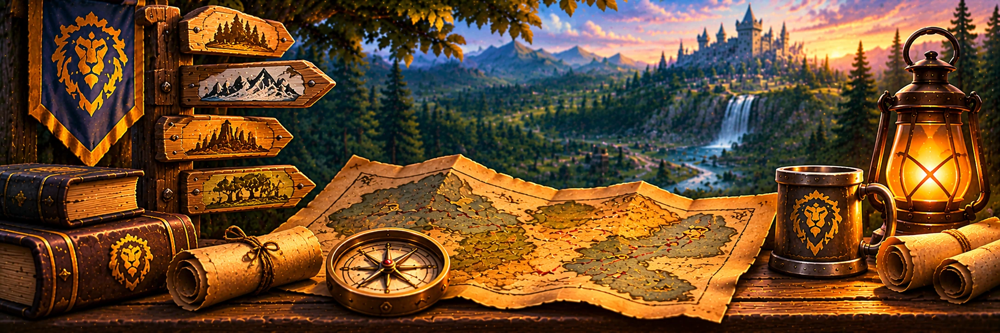
ZONE PROGRESSION
Explore level ranges, key quest hubs, rewards, and routes across Azeroth.
OPEN SECTION →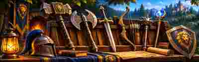
WEAPON PROGRESSION
Key named weapon upgrades, sources, and class usage from leveling through late-game dungeons.
OPEN SECTION →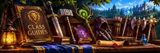
CLASS GUIDES
Leveling priorities, talent paths, key abilities, gear stats, class quests, and useful consumables.
OPEN SECTION →